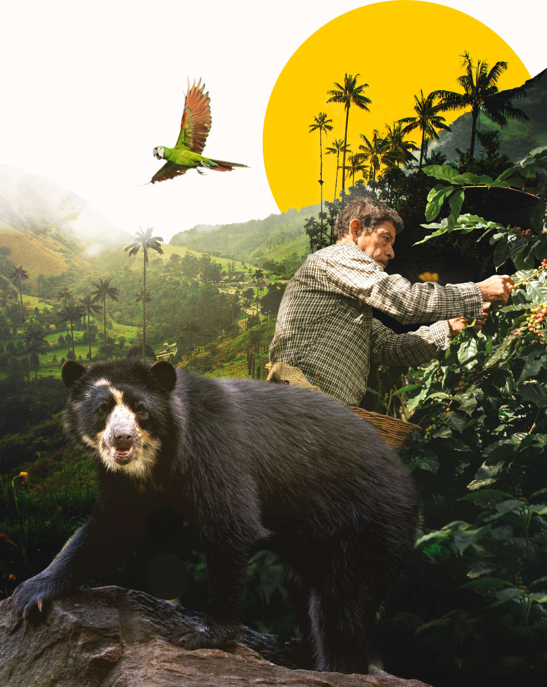
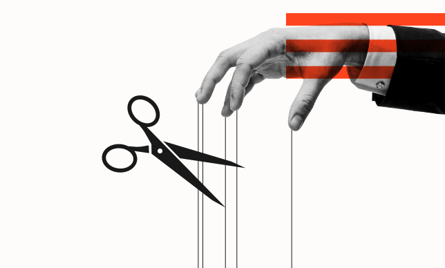
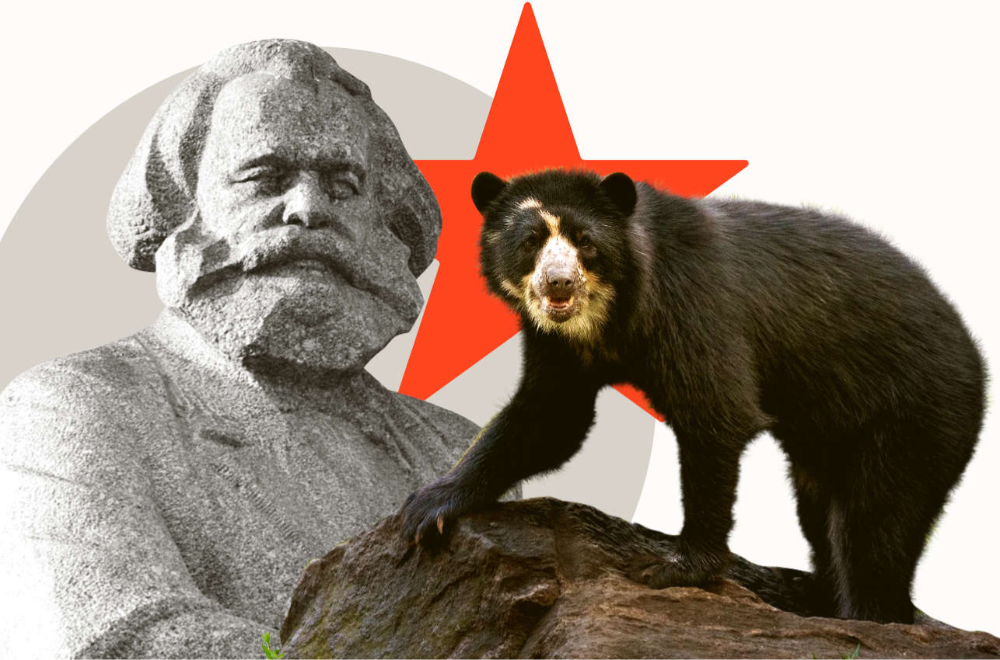

Vanguardia Colombiana
Nossos objetivos
Os pontos básicos que guiam nossas ideias e nosso projeto político são:
-
Elevação dos trabalhadores colombianos à condição de classe nacional
Os trabalhadores organizados devemos controlar todas as camadas e ramos do poder político; ser donos e gestores do excedente de produção que nós mesmos produzimos.
-

A Iberofonia:
Uma aliança estratégica geopolítica, econômica e militar, primeiramente com os países do que foi a Grã-Colômbia…
-

Socialismo com características colombianas:
Trata-se de um socialismo com características próprias, nitidamente colombiano, compatível com a idiossincrasia da imensa maioria do nosso povo.
-

Centralismo democrático
Opo-nos radicalmente a qualquer um que pretenda destruir a unidade nacional e a toda forma de fragmentação ou balcanização.
-
Planejamento econômico pluralista mediante a tecnologia cibernética
Não temos pretensões totalitárias, mas tampouco acreditamos na religião do livre-câmbio nem na anarquia da produção.
-
Sobre os ombros de gigantes
Por tudo o que foi dito, o projeto da Vanguardia Colombiana não é, como diria o marxista peruano José Carlos Mariátegui, “nem decalque nem cópia, mas criação heroica”.
A Matéria-Prima
-
Está Cuba vendendo uma nova imagem ao mundo?
Enquanto muitos cubanos fazem filas por alimentos, o neto de Raúl Castro exibe um medalhão de ouro e diz que gostaria que todos vivessem como ele…
-

Ontologia do Materialismo Político
De que é feito o mundo? Quais são os princípios fundamentais que sustentam a realidade? Para o Materialismo Político, a matéria, mas entendida como muito mais do que aquilo...
-

De que falamos quando falamos do Materialismo Político?
Nem idealismo, nem empirismo, nem verdade revelada. O Materialismo Político é um sistema filosófico em construção que funde o...
-

Eleições na Colômbia: entre a fraude e a ilusão democrática
Em 31 de maio, as eleições colombianas deixaram no primeiro turno Abelardo de la Espriella e Iván Cepeda. Tomar partido por...

Junte-se à Vanguardia Colombiana
Se você quer se unir à Vanguardia Colombiana, deve ler nosso decálogo político e estar de acordo com nossos princípios fundamentais. Se já o leu, está de acordo com nossos fundamentos e quer fazer parte da Vanguardia Colombiana, escreva para lavanguardiacolombiana@gmail.com para iniciar o processo de afiliação. Agradecemos seu interesse.